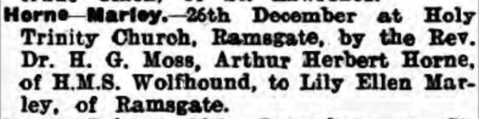
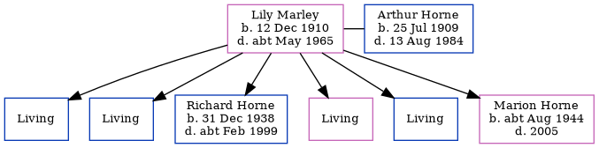

Lily Ellen Horne (née Marley) 1910 - c1965
[ Home ] | [ Calendar ] | [ Surnames Index ] | [ Errors ] | [ Family History ]Lily Marley, the wife of Arthur Herbert Horne (the second cousin twice-removed on the father's side of Nigel Horne), was born in Ramsgate, Kent, England on 12 Dec 19101,2 and married Arthur (an electrician with whom she had 6 children: Arthur Richard, David Edward, Richard John, Dorothy E, John and Marion Rose, along with 4 surviving children) at Holy Trinity Church in Ramsgate on 26 Dec 19323. On 29 Sept 1939, she was living at 47 St Patricks Road in Ramsgate1.
She died c. May 1965 in Ramsgate2.
Children
- Richard John was born on 31 Dec 1938
- Marion Rose was born c. Aug 1944
Citations
- 1939 Register - Findmypast (was recorded at this address)
- England & Wales deaths 1837-2007 - Findmypast
- England & Wales marriages 1837-2008 - Findmypast
Media
Thanet Advertiser 3 Jan 1933

1939 Register - TNA/R39/1768/1768C/014/21
England & Wales marriages 1837-2008 Transcription - BMD-M-1932-4-AZ-000774-120
England & Wales deaths 1837-2007 - BMD/D/1965/2/AZ/000393/095
Family Tree
Map
Generated by ged2site. Last updated on Jul 3, 2024
Known Issues
No records of living with anyone